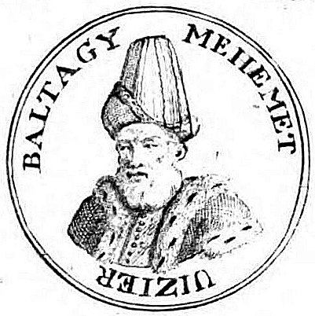

Балтаджи Мехмед-паша (тур. Baltacı Mehmed Paşa; 1662, Османджык (ныне в иле Чорум — 1712, Лемнос) — турецкий политический деятель XVIII века.
Дважды Великий визирь Османской империи (с 25 декабря 1704 до 3 мая 1706, затем с 18 августа 1710 до 20 ноября 1711).
Родился в деревне, которая теперь носит его имя [1]. В молодом возрасте проявил интерес к наукам, обучался в учебных заведениях Триполи, Туниса и Алжира[2].
Имея музыкальные способности и хороший голос, после окончания учёбы стал муэдзином.
Ловкий царедворец и фаворит султана Ахмеда III Балтаджи участвовал в смещении двух своих предшественников, и, наконец, в конце 1704 ушёл с поста капудан-паши и сменил Калайлыкоза Хаджы Ахмеда-пашу[2] на посту Великого визиря[1].
тур. Baltacı Mehmed Paşa
Великий визирь Османской империи